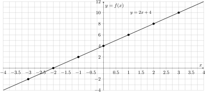
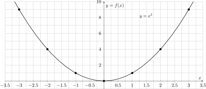
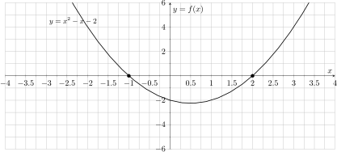
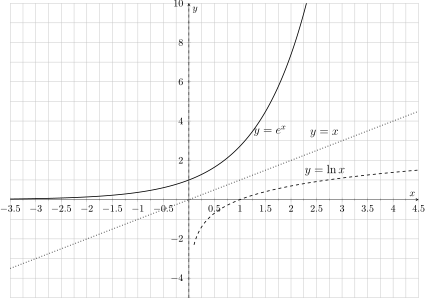
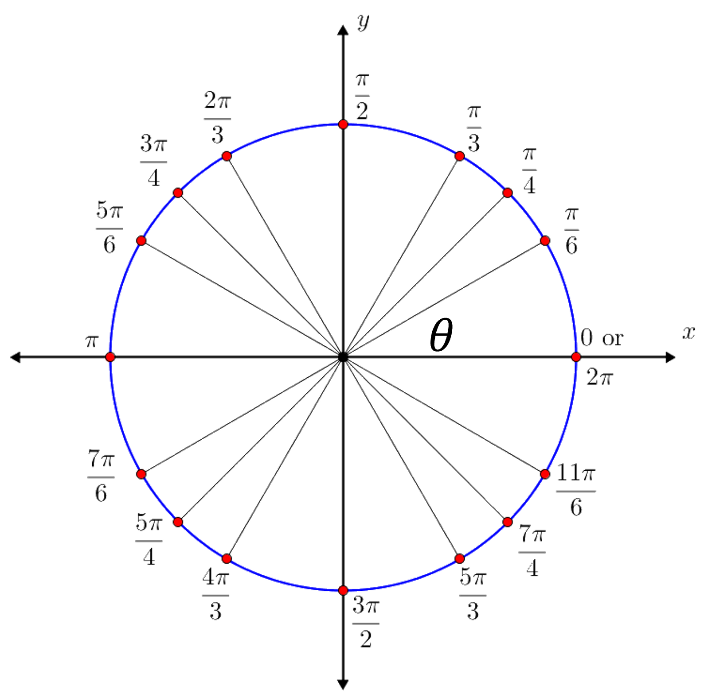
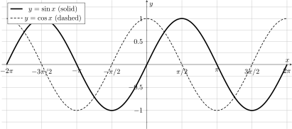
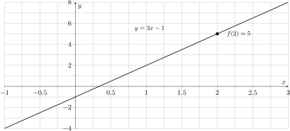
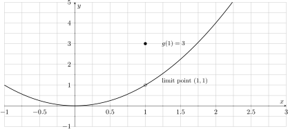
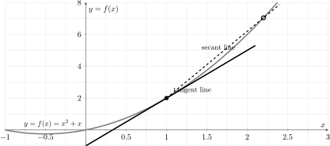
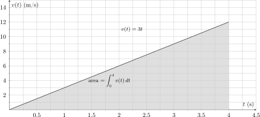

Chapter 0
Math Review for Calculus-Based Physics
This chapter reviews the core algebra and calculus tools that you will use throughout a calculus-based physics course. We begin with the real number system and interval notation, then review functions, domain, and range.
Real Number System and Intervals
In physics, we use the real numbers \(\mathbb{R}\) to describe measurable quantities such as position, time, mass, temperature, and energy. Within \(\mathbb{R}\) there are several important subsets that you should recognize.
Standard number sets and notation
We use the following symbols for common number sets:
\(\mathbb{N}\): the natural numbers
\begin{equation} \mathbb{N} = \{0,1,2,3,\dots\} \quad\text{(some authors start at $1$ instead of $0$)}. \end{equation}\(\mathbb{Z}\): the integers
\begin{equation} \mathbb{Z} = \{\dots,-3,-2,-1,0,1,2,3,\dots\}. \end{equation}\(\mathbb{Q}\): the rational numbers, that is, all numbers that can be written as a ratio of integers with nonzero denominator,
\begin{equation} \mathbb{Q} = \left\{\frac{p}{q}\,\middle|\, p,q\in\mathbb{Z},\ q\neq 0\right\}. \end{equation}\(\mathbb{R}\): the real numbers, obtained by adding all irrational numbers (such as \(\sqrt{2}\), \(\pi\), \(e\)) to the rationals.
These sets are nested as
and the set of irrational numbers is
Sometimes we further distinguish:
Real algebraic numbers \(A_{\mathbb{R}}\): real numbers that are roots of a polynomial with integer coefficients (for example, \(\sqrt{2}\) and \(\tfrac{1+\sqrt{5}}{2}\)).
Transcendental numbers: real numbers that are not algebraic, such as \(\pi\) and \(e\).
Both algebraic and transcendental numbers are real; many of them are irrational.
Venn diagram of number sets
Figure reference shows how these sets fit together as nested regions.

Intervals and number lines
When we specify the possible values of a physical quantity, we often use interval notation. Some common examples are
Key idea.
Parentheses \((\,\cdot\,)\) mean the endpoint is not included (an open endpoint), for example
\begin{equation} (0,3) = \{x\in\mathbb{R}\mid 0<x<3\}. \end{equation}Brackets \([\,\cdot\,]\) mean the endpoint is included (a closed endpoint), for example
\begin{equation} [0,3] = \{x\in\mathbb{R}\mid 0\le x\le 3\}. \end{equation}
We also use half-open intervals such as \((0,3]\) or \([0,3)\), and we combine intervals with the union symbol \(\cup\) when a domain has more than one piece (for example, \((-\infty,-1)\cup(1,\infty)\)).
Figure reference shows two common intervals on a number line.
In later sections, we will use interval notation to describe the domain and range of functions arising in physics.
Functions, Domain, and Range
A function \(f\) from a set \(A\) to a set \(B\) is a rule that assigns to each input \(x\in A\) exactly one output \(f(x)\in B\). We write
Independent variable: the input, usually denoted \(x\) or \(t\).
Dependent variable: the output, written \(f(x)\).
Domain: all allowed \(x\) values for which \(f(x)\) is defined.
Range (or image): all values \(f(x)\) obtained as \(x\) runs through the domain.
In physics, the physical domain is often a subset of the mathematical domain. For example:
A position function \(x(t)\) might be defined mathematically for all real \(t\), but physically we only care about \(t\ge 0\).
A density \(\rho(r)\) in spherical coordinates may be defined only for \(r\ge 0\).
Throughout this course, always ask:
Which values of the variables make sense in this physical situation?
Those values determine the domain you should use when interpreting graphs, solving equations, or evaluating integrals in physics problems.
Linear Functions and Linear Equations
In this section we first review the algebra of linear functions and linear equations. After each mathematical idea, we point out typical physics situations where exactly the same mathematics appears.
Linear ideas show up everywhere in physics: straight-line graphs, proportional relationships, and first-order (tangent-line) approximations to more complicated functions.
Linear functions
A linear function of a real variable \(x\) has the form
where
When we draw the graph of \(f\) in the \(xy\)–plane, we usually rename the dependent variable as
The slope \(m\) measures how much \(y\) changes when \(x\) increases by one unit; the intercept \(b\) is the value of \(y\) when \(x=0\).
Physics connection. In physics we often graph one measurable quantity as a function of another. When that graph is a straight line, the relationship between the variables is linear:
Hooke's law (small stretches): \( F = -k x \) is linear in \(x\) with slope \(-k\) and intercept \(0\).
Ohm's law: \( V = IR \) is linear in the current \(I\) with slope \(R\) and intercept \(0\).
Motion at constant velocity: \( x(t) = x_0 + v t \) is linear in \(t\) with slope \(v\) and intercept \(x_0\).
In each case one quantity plays the role of \(x\) (independent variable) and the other plays the role of \(y\) (dependent variable), and the graph is a straight line over the range where the linear model is valid.
Example: \(f(x)=2x+4\)
Consider
Comparing with Equation \(\eqref{eq:linear-function}\), we identify
Thus the graph is a straight line of slope \(2\) that crosses the \(y\)-axis at \(y=4\).
Table reference lists some points \((x,f(x))\) on the line, and Figure reference shows the corresponding graph. In the table, the step size in \(x\) is \(1\); in problems you can choose any convenient set of \(x\) values in the domain.
| \(x\) | \(-3\) | \(-2\) | \(-1\) | \(0\) | \(1\) | \(2\) | \(3\) |
| \(f(x)\) | \(-2\) | \( 0\) | \( 2\) | \(4\) | \(6\) | \(8\) | \(10\) |

Physics connection. You can read this graph the same way you would read, for example, a graph of position \(x(t)\) versus time \(t\) for motion with constant velocity: the slope gives the rate of change, and the intercept gives the initial value.
Slope as “rise over run” and as an angle
Now suppose we know two points \((x_1,y_1)\) and \((x_2,y_2)\) on a non-vertical line. The slope \(m\) of that line is
Here \(\Delta y = y_2 - y_1\) is the rise and \(\Delta x = x_2 - x_1\) is the run.
If the line makes an angle \(\theta\) with the positive \(x\)-axis, then from basic trigonometry the slope is also
Thus algebra (slope) and trigonometry (tangent) describe the same geometric idea.
Figure reference shows a slope triangle illustrating \(\Delta x\), \(\Delta y\), and the angle \(\theta\).

Physics connection. In physics graphs, the slope often has a direct physical meaning:
For a position-time graph \(x(t)\) vs. \(t\), the slope \(\Delta x / \Delta t\) over a time interval gives the average velocity on that interval.
For a velocity-time graph \(v(t)\) vs. \(t\), the slope \(\Delta v / \Delta t\) gives the average acceleration.
Later you will see many examples where reading the slope of a graph is the fastest way to extract a physical quantity.
Solving linear equations and manipulating formulas
A linear equation in one unknown \(x\) has the form
To solve for \(x\) we isolate it step by step:
More generally, for
we obtain
Physics connection. In physics we constantly rearrange formulas to solve for a different variable. The algebra is the same as in Equations \(\eqref{eq:linear-equation-standard}\)–\(\eqref{eq:linear-solve-general}\).
For example, the constant-acceleration kinematic relation
can be viewed as:
a quadratic equation in \(t\) (if \(x\), \(x_0\), \(v_0\), and \(a\) are known);
a linear equation in \(x\) (if \(t\) is the independent variable);
a linear equation in \(a\) if we solve for the acceleration:
\begin{equation} a = \frac{2\bigl(x - x_0 - v_0 t\bigr)}{t^2}, \qquad t \neq 0. \label{eq:solve-for-a} \end{equation}
The structure “coefficient \(\times\) unknown \(+\) constant” is the same as in Equation \(\eqref{eq:linear-equation-general}\); only the names of the symbols change.
Solving a system of two linear equations
Sometimes there are two unknown quantities that are tied together by two linear equations. A system of two linear equations in the variables \(x\) and \(y\) has the general form
where \(a_1, b_1, c_1, a_2, b_2, c_2\) are known numbers. Geometrically, each equation represents a straight line in the \(xy\)-plane, and the solution \((x,y)\) is the point where the two lines intersect.
There are several algebraic methods to solve such systems. Two of the most useful are substitution and elimination.
Method 1: Substitution
Solve one of the equations for one variable in terms of the other.
Substitute that expression into the second equation. This leaves a single equation for one unknown.
Solve for that unknown, then substitute back to find the other variable.
Check the solution in both original equations.
Method 2: Elimination
Multiply one or both equations by suitable constants so that the coefficient of \(x\) or \(y\) is the same (or opposite) in both equations.
Add or subtract the two equations to eliminate one variable.
Solve the resulting single equation for the remaining variable.
Substitute back into either original equation to find the other variable, and check.
Example: Solving a \(2\times 2\) system
Problem. Solve the system
Solution (by substitution).
From Equation \(\eqref{eq:lin-system-ex-2}\) we solve for \(y\):
Substitute this into Equation \(\eqref{eq:lin-system-ex-1}\):
Now solve for \(x\):
Insert \(x=-2\) into Equation \(\eqref{eq:lin-system-ex-y}\):
So the solution is
Check. Substitute into both original equations:
Both equations are satisfied, so \((x,y)=(-2,5)\) is correct.
Physics connection. Systems like \(\eqref{eq:two-eq-general-1}\)–\(\eqref{eq:two-eq-general-2}\) appear whenever two unknown quantities are linked by two independent relationships. For example:
Resolving a force of known magnitude into its \(x\)- and \(y\)-components when you also know how those components combine with other forces.
Finding two currents \(I_1\) and \(I_2\) in a simple circuit from two loop or junction equations.
Determining unknown initial velocity components \(v_{0x}\) and \(v_{0y}\) of a projectile from information about its position at two different times.
The algebra of solving a \(2\times 2\) system is the same in all of these situations; only the physical meaning of \(x\) and \(y\) changes.
Key algebra skills.
Apply the same operation to both sides of an equation.
Isolate the desired variable step by step.
Interpret slopes and intercepts on graphs.
Solve simple systems of linear equations in two unknowns.
Check the result by substituting back into the original equation(s) and verifying that both sides match (including units).
Quadratic Functions and Equations
A quadratic function is any function that can be written in the form
where \(a\), \(b\), and \(c\) are real constants. Its graph is a parabola opening upward if \(a>0\) and downward if \(a<0\).
Physics connection. Quadratic functions appear whenever there is constant acceleration or a similar second-order effect:
Projectile motion (vertical position):
\begin{equation} y(t) = y_0 + v_{0y} t - \frac{1}{2} g t^2, \label{eq:projectile-y} \end{equation}where \(g\) is the gravitational acceleration.
One-dimensional kinematics:
\begin{equation} x(t) = x_0 + v_0 t + \frac{1}{2} a t^2, \label{eq:kinematics-x} \end{equation}where \(a\) is a constant acceleration.
In both examples, \(x\) or \(y\) is a quadratic function of \(t\).
The basic parabola \(f(x)=x^2\)
The simplest quadratic is
Its graph is a parabola opening upward with vertex at \((0,0)\) and axis of symmetry the \(y\)-axis.
Table reference lists several points \((x,f(x))\) with step size \(1\). In problems you can choose any convenient set of points in the domain.
| \(x\) | \(-3\) | \(-2\) | \(-1\) | \(0\) | \(1\) | \(2\) | \(3\) |
| \(f(x)=x^2\) | \(9\) | \(4\) | \(1\) | \(0\) | \(1\) | \(4\) | \(9\) |

Example: \(f(x)=x^2-x-2\)
Consider
Here \(a=1\), \(b=-1\), and \(c=-2\). Factoring gives
so the zeros (roots) are
Vertex form (useful for sketching). Every quadratic can also be written as
where \((h,k)\) is the vertex. For \(f(x)=x^2-x-2\), we have
so the vertex is at \(\bigl(\tfrac{1}{2}, -\tfrac{9}{4}\bigr)\).
Figure reference shows the graph of \(f(x)=x^2-x-2\) with its zeros marked.

Quadratic equations
A quadratic equation in \(x\) has the standard form
Factoring (when possible). If the quadratic factors as
then the solutions are \(x=r\) and \(x=s\). This is the fastest method when the factors are easy to see.
Quadratic formula (always works). In general, the solutions of \(\eqref{eq:quadratic-standard}\) are given by
The quantity
is called the discriminant and determines the type of roots:
\(D>0\): two distinct real roots;
\(D=0\): one repeated real root;
\(D<0\): two complex (nonreal) conjugate roots.
In kinematics problems, equations like \(\eqref{eq:projectile-y}\) or \(\eqref{eq:kinematics-x}\) often lead to a quadratic equation for the time \(t\). You should be comfortable choosing between factoring (when possible) and the quadratic formula, and interpreting which root is physically meaningful (for example, discarding negative times when \(t\ge 0\)).
Exponential and Logarithmic Functions
In this book, \(\ln x\) denotes the natural logarithm (logarithm base \(e\)). We sometimes write \(\log x\) when the base is clear from context; unless stated otherwise, it always means \(\ln x\).
The basic exponential and logarithmic functions have
They are inverse functions:
Why physics cares
Exponential growth/decay. Many time–evolution laws in physics are exponential, for example
\begin{equation} N(t) = N_0 e^{-t/\tau}, \label{eq:exp-decay} \end{equation}which describes radioactive decay and the discharge of a capacitor in an RC circuit.
Logarithmic scales. Logarithms appear in decibels (sound intensity), pH (acidity), the Richter scale (earthquakes), entropy formulas in statistical mechanics, and in semilog plots used to reveal exponential behavior as straight lines.

Laws of exponents and radicals
For real numbers \(x,y>0\) and integers \(m,n\), the basic exponent rules are
Fractional exponents correspond to roots and powers:
These rules are heavily used when simplifying expressions such as \(e^{2kt} = (e^{kt})^2\) or \(\sqrt{ab} = a^{1/2} b^{1/2}\).
Logarithm rules
For \(a>0\), \(a\neq 1\), and \(x,y>0\), logarithms satisfy
More generally, for a logarithm with base \(a\),
which is the change-of-base formula. In practice we usually work with \(\ln\) and use \(\eqref{eq:change-of-base}\) if another base is needed.
These rules let you turn products into sums and powers into factors, which is especially useful when solving exponential equations and working with logarithmic data in physics.
Trigonometry for Physics
Trigonometry appears everywhere in calculus-based physics: resolving vectors into components, describing oscillations and waves, working with circular motion, and understanding phase in AC circuits. This section reviews the essentials you will use most often.
Right-triangle definitions
In a right triangle, let \(\theta\) be one of the acute angles. Then
These definitions are ratios of side lengths.
The Pythagorean theorem relates the three sides:
Figure reference shows how the sides are named relative to the angle \(\theta\).
Unit circle and special angles
The unit circle (radius \(1\)) encodes all sine and cosine values. For an angle \(\theta\) measured from the positive \(x\)-axis, the point on the circle has coordinates
Figure reference shows the standard special angles that occur frequently in physics and calculus.

Exact values at common angles
Table reference summarizes the exact values used frequently in physics and calculus.
| \(\theta\) (deg) | \(0^\circ\) | \(30^\circ\) | \(45^\circ\) | \(60^\circ\) | \(90^\circ\) | \(180^\circ\) | \(270^\circ\) | \(360^\circ\) |
| \(\theta\) (rad) | \(0\) | \(\pi/6\) | \(\pi/4\) | \(\pi/3\) | \(\pi/2\) | \(\pi\) | \(3\pi/2\) | \(2\pi\) |
| \(\sin\theta\) | \(0\) | \(1/2\) | \(1/\sqrt{2}\) | \(\sqrt{3}/2\) | \(1\) | \(0\) | \(-1\) | \(0\) |
| \(\cos\theta\) | \(1\) | \(\sqrt{3}/2\) | \(1/\sqrt{2}\) | \(1/2\) | \(0\) | \(-1\) | \(0\) | \(1\) |
| \(\tan\theta\) | \(0\) | \(1/\sqrt{3}\) | \(1\) | \(\sqrt{3}\) | undefined | \(0\) | undefined | \(0\) |
Graphs of \(\sin x\) and \(\cos x\)
Figure reference shows the graphs of \(f(x)=\sin x\) and \(g(x)=\cos x\) over two periods. Both have domain \((-\infty,\infty)\) and range \([-1,1]\).

Physics connection. In simple harmonic motion and wave problems, you will repeatedly work with functions of the form
where \(A\) is the amplitude, \(\omega\) is the angular frequency, and \(\phi\) is the phase. Understanding the basic graphs of \(\sin\) and \(\cos\) makes these models much easier to interpret.
Key trigonometric identities
Several identities show up repeatedly in physics, especially when simplifying expressions for waves, oscillations, and vector components.
Pythagorean identities
The Pythagorean identity follows directly from the unit circle:
From this, we obtain
Even/odd and symmetry identities
Sine is an odd function and cosine is an even function:
Physically, these symmetries are useful when analyzing motion or fields that are symmetric about the origin or the vertical axis.
Angle addition and subtraction
The angle addition and subtraction formulas are
These are especially important when combining waves with different phases, for example in interference and AC circuit analysis.
Double-angle formulas
Setting \(\beta=\alpha\) in the angle addition formulas gives the double-angle identities:
These forms are useful when rewriting expressions like \(\sin^{2}\theta\) or \(\cos^{2}\theta\) in terms of a single cosine with double angle, which appears often in power calculations and intensity formulas.
Phase-shift identities
It is sometimes convenient to convert between sine and cosine using phase shifts:
In oscillation problems, this shows that any sinusoidal function can be written either as a sine or a cosine with an appropriate phase shift.
Calculus Essentials
Limits and continuity (informal view)
A limit describes what values \(f(x)\) gets close to when \(x\) gets close to some number \(a\).
Left and right limits.
The left-hand limit of \(f\) at \(x=a\),
\begin{equation} \lim_{x\to a^-} f(x), \end{equation}is the value that \(f(x)\) approaches when \(x\) comes in toward \(a\) from the left (\(x<a\)).
The right-hand limit of \(f\) at \(x=a\),
\begin{equation} \lim_{x\to a^+} f(x), \end{equation}is the value that \(f(x)\) approaches when \(x\) comes in toward \(a\) from the right (\(x>a\)).
If both one–sided limits exist and are equal, we say the (two–sided) limit \(\displaystyle \lim_{x\to a} f(x)\) exists and define
We say that a function \(f\) is continuous at \(x=a\) if all three of the following are true:
\(f(a)\) is defined;
the left-hand and right-hand limits both exist and are equal:
\begin{equation} \lim_{x\to a^-} f(x) = \lim_{x\to a^+} f(x) = L; \end{equation}this common limit equals the function value:
\begin{equation} f(a) = L. \label{eq:continuity-condition} \end{equation}
In words: as you walk along the graph toward \(x=a\) from either side, you end up at the same height, and that height is exactly the value of the function at \(x=a\).
In this course, you mainly need to recognize simple situations where limits describe slopes, rates, or behavior very close to a point (for example, the instantaneous velocity of a moving object).
Consider
For \(x\) near \(2\), \(f(x)\) is near \(5\). In fact
so \( \displaystyle \lim_{x\to 2} f(x) = 5. \) The function value is
Here
so \(f\) is continuous at \(x=2\). The graph has no jump or hole at that point.

Now consider the piecewise function
For \(x\) close to \(1\) (from either side but not equal to \(1\)), \(g(x)\) behaves like \(x^2\), so
Thus \( \displaystyle \lim_{x\to 1} g(x) = 1. \) However,
So the left and right limits agree, but they do not equal the function value:
Therefore \(g\) is not continuous at \(x=1\). The graph has a “hole” at \((1,1)\) and a filled point at \((1,3)\).

Physics connection.
If position \(x(t)\) is continuous in \(t\), a particle does not “jump” from one place to another without passing through intermediate points.
Many fields in physics (temperature, electric potential, etc.) are modeled as continuous functions so that there are no sudden jumps in value at a point.
Later, derivatives (instantaneous rates of change) will be defined using limits where \(x\to a\). Understanding left and right limits and continuity now makes those definitions much easier to follow.
Derivatives as rates of change
In physics, we are often interested in how one quantity changes as another quantity changes. For example, how position changes with time, or how current changes with time. The mathematical tool that describes an instantaneous rate of change is the derivative.
Average vs. instantaneous rate of change. For a function \(f(x)\), the average rate of change of \(f\) between \(x\) and \(x+h\) (with \(h\neq 0\)) is
Geometrically, this is the slope of the secant line through the points \(\bigl(x,f(x)\bigr)\) and \(\bigl(x+h,f(x+h)\bigr)\).
If we let \(h\) get closer and closer to \(0\), the secant line approaches the tangent line at \(x\), and the average rate of change approaches the instantaneous rate of change.
The derivative of \(f\) at \(x\) is defined by the limit
when this limit exists. Geometrically, \(f'(x)\) is the slope of the tangent line to the graph of \(f\) at the point \(\bigl(x,f(x)\bigr)\).

Physical meaning: position, velocity, and acceleration. Let \(x(t)\) denote the position of a particle along a line as a function of time \(t\).
The average velocity between times \(t\) and \(t+\Delta t\) is
\begin{equation} v_{\text{avg}} = \frac{\Delta x}{\Delta t} = \frac{x(t+\Delta t) - x(t)}{\Delta t}. \label{eq:average-velocity} \end{equation}The instantaneous velocity at time \(t\) is the derivative
\begin{equation} v(t) = x'(t) = \frac{dx}{dt} = \lim_{\Delta t\to 0} \frac{x(t+\Delta t) - x(t)}{\Delta t}. \label{eq:velocity-derivative} \end{equation}The instantaneous acceleration is the derivative of velocity:
\begin{equation} a(t) = v'(t) = x''(t) = \frac{d^2x}{dt^2}. \label{eq:acceleration-derivative} \end{equation}
Note that:
If \(x(t)\) is measured in meters and \(t\) in seconds, then \(v(t)\) has units of m/s and \(a(t)\) has units of m/s\(^2\).
The derivative always carries “units of \(f\) divided by units of \(x\)” (output units divided by input units).
Suppose the position of a particle moving along a line is
with time \(t\) measured in seconds. Then the velocity and acceleration are
At \(t = 1\ \text{s}\),
So at \(t=1\ \text{s}\), the particle is moving to the right at \(7\ \text{m/s}\) and speeding up at a constant rate of \(4\ \text{m/s}^2\).
Basic derivative rules
Computing derivatives directly from the limit definition \(\eqref{eq:derivative-definition}\) is usually too slow for real problems. In practice, we use a small set of rules. If \(f\) and \(g\) are differentiable and \(c\) is a constant, then:
Basic algebra and power rules
Product and quotient rules
Chain rule (functions of functions) If \(y=f(u)\) and \(u=g(x)\), then the chain rule says
This rule is essential whenever the variable \(x\) is “hidden inside” another function (for example, \(\sin(3x)\) or \(e^{x^2}\)).
Standard derivatives (with \(x\) in radians)
Let
Treat \(x^2\) and \(e^{3x}\) as two factors and use the product rule:
In physics, combinations like \(x^2 e^{3x}\) can appear in models of exponentially growing or decaying quantities with additional polynomial factors (for example, certain solutions of differential equations).
Integrals as accumulated change
Derivatives measure instantaneous rates of change. Integrals do the opposite: they measure how much a quantity has accumulated as another variable changes.
The definite integral of \(f\) from \(a\) to \(b\) is written
Informally, this represents the signed area between the graph \(y=f(x)\) and the \(x\)–axis from \(x=a\) to \(x=b\):
regions where \(f(x)\ge 0\) contribute positive area,
regions where \(f(x)<0\) contribute negative area.
From a physics point of view, the key idea is:
quote If \(f(x)\) is a rate of change of some quantity \(Q\), then the integral of \(f\) over an interval gives the net change in \(Q\) over that interval. quote
Mathematically, if \(F\) is any antiderivative of \(f\) (so \(F'(x)=f(x)\)), then the Fundamental Theorem of Calculus says
Example: displacement from velocity. Let \(x(t)\) be the position of a particle and \(v(t)=dx/dt\) its velocity. Then velocity is the rate of change of position, so the net displacement from time \(t=a\) to \(t=b\) is
If \(v(t)\ge 0\) on \([a,b]\), the particle is always moving in the positive direction and the integral is the (unsigned) area under the \(v(t)\) graph. If \(v(t)\) changes sign, the integral gives the net displacement (forward minus backward motion).

A particle moves along a line with velocity
for \(0 \le t \le 4\ \text{s}\). Its displacement from \(t=0\) to \(t=4\) is
If \(x(0)=0\), then \(x(4)=24\ \text{m}\). Notice that the units work out: (m/s)\(\times\) s \(=\) m.
Other physics examples. The same “rate \(\to\) accumulated change” idea appears everywhere:
If \(I(t)\) is electric current (C/s), then \(\displaystyle \int_{t_1}^{t_2} I(t)\,dt\) is the total charge (C) that flows during \([t_1,t_2]\).
If \(F(x)\) is force (N) along a line and \(x\) is position (m), then \(\displaystyle \int_{x_1}^{x_2} F(x)\,dx\) is the work done (J) in moving from \(x_1\) to \(x_2\).
Indefinite integrals and antiderivative rules
While a definite integral gives a number, an indefinite integral (or antiderivative) gives a family of functions.
A function \(F\) is called an antiderivative of \(f\) on an interval if
We write
where \(C\) is an arbitrary constant. Different choices of \(C\) give different antiderivatives with the same derivative \(f\).
For \(n\ne -1\),
Other standard examples (again with \(x\) in radians) are
In physics, indefinite integrals often appear when we solve differential equations. For example, if we know that acceleration \(a\) is constant, then
and the constant \(C\) is fixed by an initial condition like \(v(0)=v_0\).
\(u\)–substitution (reverse chain rule). When a function has the form \(f(g(x))g'(x)\), a simple substitution \(u=g(x)\) often reduces the integral to one of these basic forms. This is the integration version of the chain rule.
Compute
Rewrite \(\dfrac{4}{x}\) as \(4x^{-1}\) and integrate term by term:
Compute
Let \(u=x^2\), so \(du = 2x\,dx\). Then
This pattern (something like \(\cos(\text{something})\) times the derivative of that “something”) occurs frequently in physics, for example when integrating fields or potentials that have composite functional forms.
For the Interested Reader
This chapter is a fast refresher, not a first course. If a topic here is genuinely new to you rather than just rusty, the resources below teach it properly, and they are the right place to build the fluency this course assumes. Everything listed is free.
Videos
3Blue1Brown's Essence of Calculus is the best visual introduction to the calculus half of this review. It builds the derivative and the integral from pictures, so the rules in the last section stop looking like something to memorise. Start with the overview, then watch the episode matching whatever you want to see:
The essence of calculus — 3Blue1Brown
 Watch on YouTube
Watch on YouTube
The paradox of the derivative (our Derivatives as rates of change)
Derivative formulas through geometry (Basic derivative rules)
Limits, L'H\^opital's rule, and epsilon-delta (Limits and continuity)
Integration and the fundamental theorem of calculus (Integrals as accumulated change)
For the algebra, trigonometry and precalculus material, Khan Academy's Precalculus track has short videos with immediate practice on exactly the functions, exponentials, logarithms and trigonometry reviewed above.
Websites
Paul's Online Math Notes. The most efficient written reference for everything in this chapter: Algebra, Calculus I, and a set of printable cheat sheets for algebra, trigonometry and calculus that are worth keeping beside you.
OpenStax, free textbooks. Precalculus covers the functions, exponentials, logarithms and trigonometry of this chapter; Calculus Volume 1 covers the limits, derivatives and integrals. Both have many worked examples and exercises with answers.
A word on how to use this chapter. Do not try to memorise it. Skim it once to see what is here, then come back to a specific section the moment a physics problem needs it — when you first have to differentiate a trajectory, integrate a velocity, or solve a quadratic for a time of flight. The mathematics sticks far better when a physical question makes you reach for it.